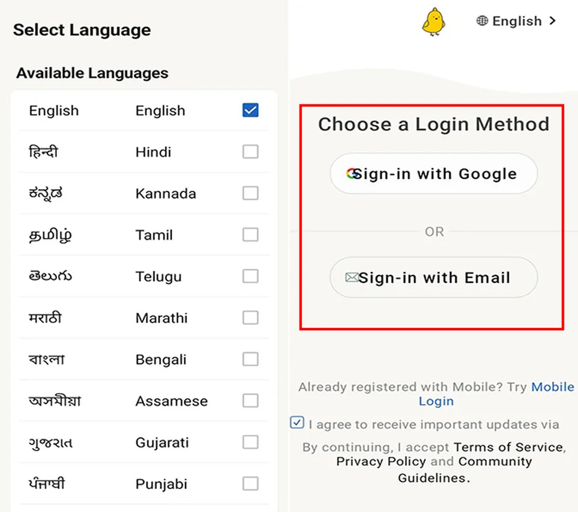
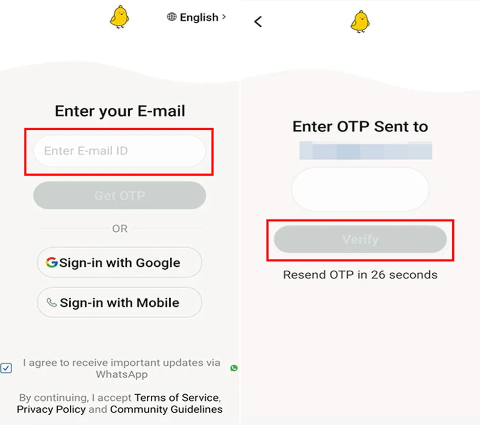
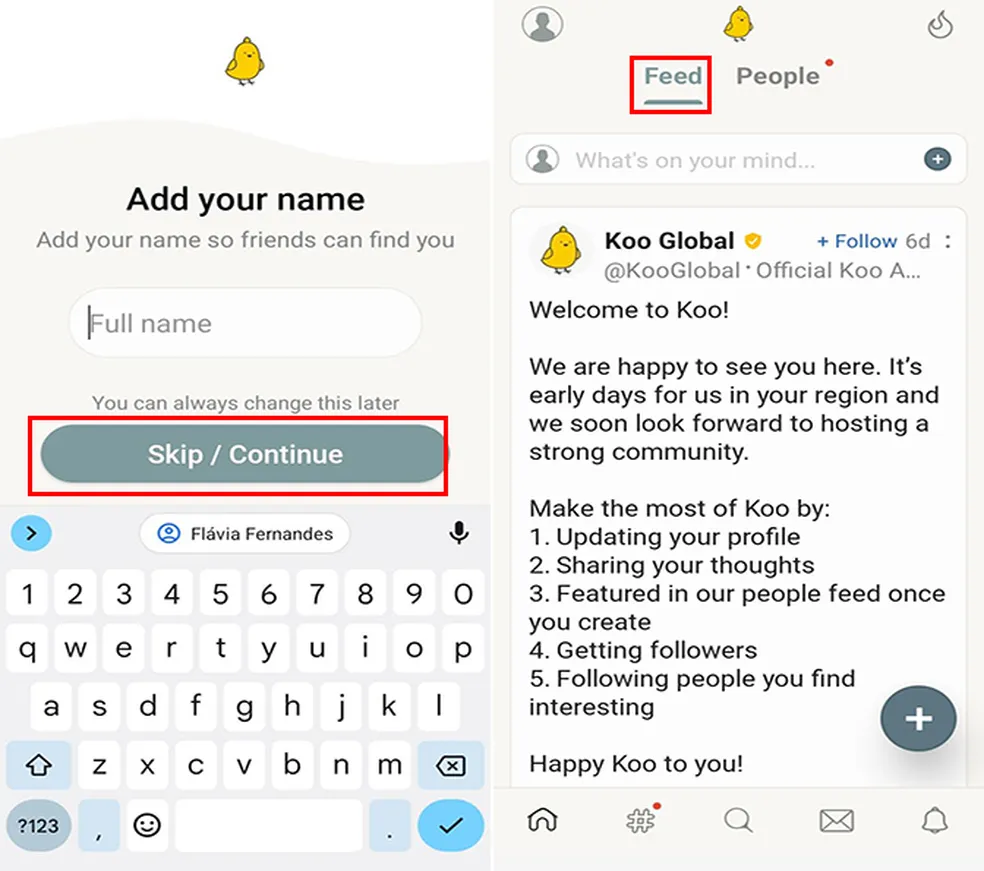
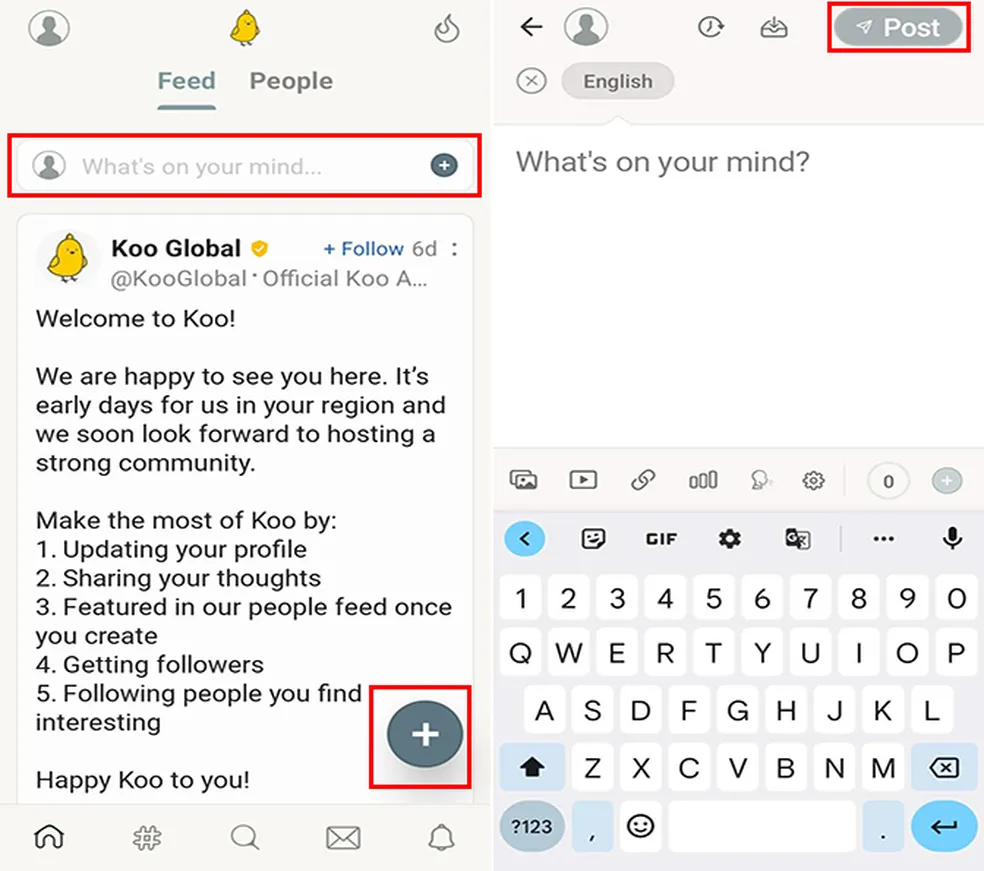
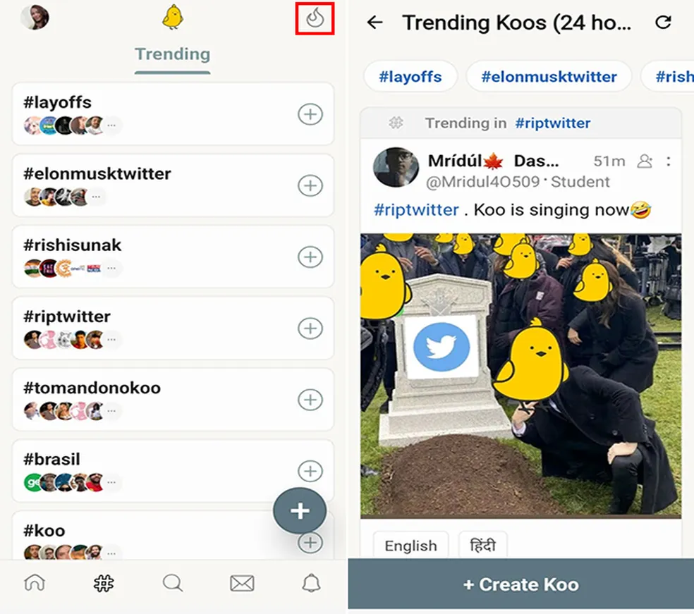

Como usar o Koo App, o novo substituto do Twitter de Elon Musk
Com diversas polêmicas envolvendo o Twitter após a sua compra por Elon Musk, brasileiros estão migrando para a nova rede; no app as hashtags 'RIPTwitter' e 'brasil' estão em alta


O Koo app, aplicativo disponível para Android e iPhone (iOS), é a nova aposta da internet após rumores de que o Twitter vai acabar. Segundo o Google Trends, site que mensura as buscas no Google, a nova rede apresentou um aumento repentino nas pesquisas hoje (18). O possível substituto do Twitter apresenta funcionalidades semelhantes à rede comprada por Elon Musk, como o layout do feed, a aba de trending topics e a opção de recompartilhamento de publicações. Também é possível ver funções adicionais, como a opção de publicação em mais de um idioma.
Na nova rede, as hashtags #RIPTwitter e #Brasil estão entre os assuntos em alta, impulsionadas pela chegada dos brasileiros. A migração de usuários ocorre em razão dos diversos contratempos na rede do pássaro azul, como demissão em massa, saída de funcionários e fechamento temporário de escritórios da empresa. Confira, nas próximas linhas, como criar uma conta no Koo e usar as funções do app.
Rede social Koo pode ser nova alternativa para usuários do Twitter — Foto: Flávia Fernandes/TechTudoComo criar uma conta e usar o Koo app
Passo 1. Abra o aplicativo e selecione seu idioma de preferência. Vale dizer que o Koo app ainda não conta com a língua portuguesa. Depois, escolha o método de cadastro, que pode ser feito via conta do Google ou por e-mail;
 Koo é nova aposta para substituir Twitter — Foto: Reprodução/Flávia FernandesPasso 2. Neste tutorial optamos por criar a conta através do e-mail. Neste caso, digite o endereço de e-mail e escolha entre receber o código de ativação pela sua caixa de entrada ou SMS. Digite a sequência numérica recebida e toque em “Verify”;
 Conta no Koo pode ser criada com e-mail, celular ou Google — Foto: Reprodução/Flávia FernandesPasso 3. Em seguida, insira seu nome e pressione “Skip/Continue”. Na página principal, o app abre a aba “Feed”, com uma mensagem de boas vindas da empresa;
 Koo oferece sugestões para seguir pessoas na aba "People" — Foto: Reprodução/Flávia FernandesPasso 4. Para começar a criar um post, é possível ir na página inicial e pressionar a barra de texto ou tocar no símbolo de (+). A quantidade máxima de caracteres por publicação é 500. Também há a possibilidade de adicionar imagens, links, vídeos e enquetes. Ao finalizar, toque em “Post”;
 Koo é rede indiana que está fazendo sucesso entre usuários do Twitter — Foto: Reprodução/Flávia FernandesPasso 5. No menu “#”, as tags mais engajadas são mostradas. Ao clicar sobre elas, a thread é aberta. No símbolo de fogo, publicações feitas recentemente com as hashtags em alta são exibidas.
 Usuários fazem meme no Koo com possível fechamento do Twitter — Foto: Reprodução/Flávia Fernandes